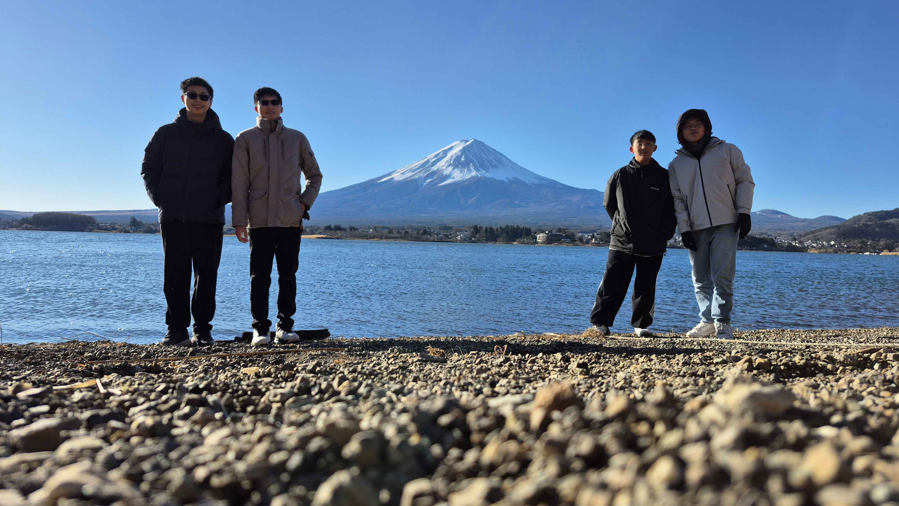
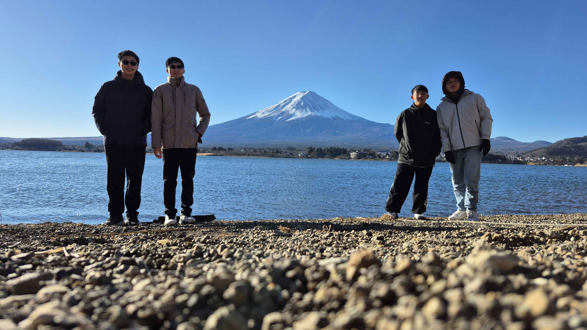

深度關東 X 聖地巡禮
秋葉原 澀谷SKY 朝日稻荷神社 星野度假村BEB5輕井澤 松本城 諏訪湖 夢見る河口湖(包棟小木屋) 大室山 城崎海岸

TWD 30,000(不含餐)
成團人數:12人
旅遊方式:自駕
去程2026暑(預計7天7夜)
回程2026暑
城市:關東
翔翔旅行社保留最終解釋權
TWD 30,000(不含餐)
成團人數:12人
旅遊方式:自駕
去程2026暑(預計7天7夜)
回程2026暑
城市:關東
翔翔旅行社保留最終解釋權
還沒確定
| 去程 | 泰獅 SL394 |
2025/03/18 (二) | 12:10 | 台灣桃園國際機場 | → | 16:15 | 東京成田機場 |
| 回程 | 泰獅 SL395 |
2025/03/22 (六) | 17:15 | 東京成田機場 | → | 20:20 | 台灣桃園國際機場 |


秋葉原滿坑滿谷動漫商店的秋葉原，到底該從何逛起？不妨就從JR秋葉原電器街出口斜前方的「秋葉原無線電會館」開始吧！這裡聚集的店家五花八門，商品種類更是多到眼花撩亂，不論是要鋼彈機甲，動漫公仔還是電腦配備，皆應有盡有，就把無線電會館當作朝聖起點，展開秋葉原的驚奇旅程！
動漫聖地
秋葉原是多部動漫作品的取景地，如《孤獨搖滾》中提到的商店街，吸引動漫迷前來朝聖。
電器街購物
除了動漫商品，這裡還有二手電器、電子零件等，是科技愛好者的天堂。


澀谷SKY澀谷地標「SHIBUYA SKY」展望台，是於疫情期間開幕的東京景點，有230公尺高的高空觀景空間，入口就在「澀谷Scramble Square」商場的14樓，整棟樓不只有美景，還有許多好吃好玩的。
360度全景
從SHIBUYA SKY可俯瞰東京市景，包括東京鐵塔、晴空塔，甚至遠眺富士山。
夜間體驗
夜晚的燈光秀與城市夜景，讓這裡成為情侶約會的熱門地點。


朝日稻荷神社電影《天氣之子》中取景的朝日稻荷神社位於東京銀座，是隱藏於都市高樓間的靜謐神社。紅色鳥居與階梯搭配周圍現代建築，營造出獨特的都市神秘感。宛如電影場景般，這裡是感受《天氣之子》氛圍、拍攝同款美照的絕佳地點！本神社除了被視作商業之神，保佑人們生意興隆外，自坐鎮當地以來未曾發生火災，故亦被人當作締結姻緣、家戶圓滿之神，其神威無窮無盡。
聖地巡禮
《天氣之子》中出現的階梯場景，讓粉絲能重現電影中的經典畫面。
銀座秘境
位於繁華商業區，這座神社提供了一個寧靜的避世角落。


星野度假村BEB5輕井澤以年輕活力風格打造，主打自由輕鬆的住宿體驗。設有24小時開放的交誼空間，適合好友相聚、悠閒放鬆，並鄰近輕井澤自然美景與購物景點，便利且充滿樂趣。一位一晚約JPY7,433，還有著以純溫泉水的蜻蜓之湯！下方為飯店官網連結：https://hoshinoresorts.com/zh_tw/hotels/beb5karuizawa/
溫泉體驗
蜻蜓之湯使用純天然溫泉水，讓旅客在輕鬆住宿中享受放鬆時光。
自然與購物
靠近輕井澤Outlet和自然步道，兼顧休閒與購物需求。


松本城日本現存最古老的五重天守，以黑白對比的優雅外觀聞名，被譽為「烏城」。四季皆美，春櫻、夏綠、秋楓、冬雪映襯城池，宛如畫卷。歷史迷與攝影愛好者絕不能錯過！
歷史價值
松本城是日本國寶級古蹟，內部保留原始木造結構，展現戰國時代建築風貌。
四季美景
春季櫻花盛開，冬季雪景迷人，是攝影愛好者的天堂。


諏訪湖是電影《你的名字》中糸守湖的靈感取景地，位於長野縣，四季風景如畫，湖面倒映天空，美不勝收。晨霧繚繞時更添神秘感，讓人彷彿置身於瀧與三葉的故事中。是朝聖迷人湖景與感受電影氛圍的絕佳之地！在夏季，每年8月15日舉辦的「諏訪湖祭湖上花火大會」，以及每年9月第一個星期六舉辦的「全國新作煙火競技大會」，更是受到日本當地人的熱愛！
聖地巡禮
《你的名字》粉絲可在此尋找電影中湖泊靈感來源，重溫劇情感動。
煙火盛會
夏季的煙火大會吸引數萬遊客，湖面倒映煙火，場面壯觀。

 

夢見る河口湖夢見る河口湖コテージ戸沢センター位於山梨縣富士河口湖町，坐落於河口湖北岸的湖畔，正對富士山，背靠御坂山脈的戶澤山森林。這裡原為島津公爵的別墅所在地，現提供設備完善的獨棟別墅和露營區域，適合家庭或團體旅客。設施包括全天候屋頂的燒烤區（需額外付費）和多種水上活動，如手划船、腳踏船等。無論是欣賞富士山美景，還是享受湖畔休閒時光，這裡都是理想之選。
富士山景觀
獨棟別墅正對富士山，提供無遮擋的絕美視野。
休閒活動
水上活動與燒烤區讓團體旅客享受豐富的戶外樂趣。


大室山（Ōmuroyama）是位於日本靜岡縣伊東市的一座火山，屬於伊豆半島地區的一部分。它是一座標高580公尺的休火山，擁有獨特的圓錐形外觀，整座山被茂密的綠色草原覆蓋，因此四季皆有不同的景色可欣賞。
特色介紹：
火山地形與景觀 大室山的頂部呈現碗狀凹陷，這是由火山噴發後形成的火山口。由於地勢開闊，站在山頂可以俯瞰整個伊豆半島，甚至遠眺富士山和相模灣。
纜車體驗 遊客可以搭乘纜車（リフト）登上山頂，享受懸空而上的視野，觀賞整片綠意盎然的山坡，這也是大室山的熱門體驗之一。
山頂環狀步道 抵達山頂後，遊客可以沿著「火口一周步道」徒步環繞山頂，360度欣賞伊豆高原的風景，途中還能看到遠方的駿河灣、伊東市區等美景。
自然奇觀
大室山的火山地形與草原景觀，提供獨特的自然探索體驗。
遠眺富士山
天氣晴朗時，山頂可見富士山，是攝影愛好者的絕佳地點。


城崎海岸（城ヶ崎海岸, Jōgasaki Kaigan）位於日本靜岡縣伊東市，是伊豆半島東海岸的一處壯麗海岸線景點，以其火山地形、斷崖絕壁和壯觀的海景聞名。這片海岸是由約4000年前大室山火山噴發後，熔岩流入相模灣並冷卻形成的，塑造出如今壯觀的熔岩海岸地形。
特色介紹：
吊橋 – 門脇吊橋（門脇つり橋） 城崎海岸最具代表性的景點就是門脇吊橋，這座吊橋長約48公尺、離海面高約23公尺，橫跨兩側懸崖之間，步行其上可以感受到海風吹拂，俯瞰壯闊的太平洋。這座吊橋不僅是旅遊亮點，也是許多攝影愛好者取景的熱門地點。
海蝕地形與柱狀節理 城崎海岸擁有大量經過長年海浪侵蝕而形成的懸崖峭壁與熔岩岩石，其中柱狀節理特別壯觀，類似於台灣的野柳或是韓國的濟州島柱狀節理帶，展現出火山活動後留下的奇特地貌。
門脇燈塔 附近的門脇燈塔提供了絕佳的觀景位置，登上燈塔可以俯瞰整個海岸線，天氣晴朗時甚至可以遠望伊豆七島。
冒險體驗
門脇吊橋提供刺激的懸崖步行體驗，適合喜愛冒險的旅客。
地質奇觀
柱狀節理與海蝕地形，讓這裡成為地質愛好者的必訪之地。